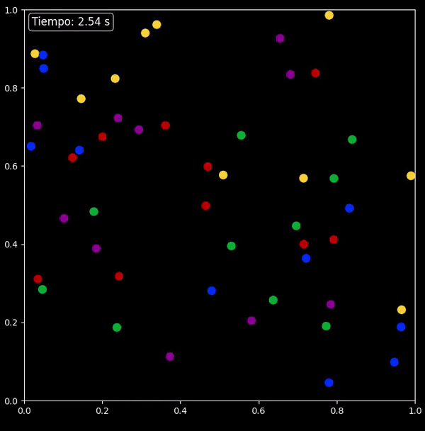

Simulación de colisiones elásticas entre múltiples discos en un espacio cerrado.
Este script configura y ejecuta una simulación de colisiones elásticas utilizando
los objetos Disco y Escenario definidos en el módulo classes. Se generan
aleatoriamente posiciones iniciales para un conjunto de discos y se les asignan
colores variados y radios específicos. La simulación se ejecuta y se visualiza en tiempo real.
Dependencias:
-numpy
-classes (debe incluir las clases Disco y Escenario).
Para realizar esta simulación iniciamos llamando las bibliotecas a utilizar, en este caso como ya mencionamos anteriormente, necesitamos numpy, Disco y Escenario:
import numpy as np
from classes import Disco, Escenario
Seguidamente, empezamos con el código como tal, definiendo el espacio de simulación y los parámetros iniciales, en nuestro caso, ahora usamos 50 discos.
espacioHorizontal = 1.0
espacioVertical = 1.0
cantidadDiscos = 50
También se define el tamaño de la cuadrícula para posicionar los discos, de tal manera que se pueda crear una matriz cuadrada que pueda almacenar una cantidad igual o mayor a la cantidad de discos.
largoMatriz = 1
while True:
if largoMatriz * largoMatriz < cantidadDiscos:
largoMatriz += 1
else:
break
Luego se definen las distancias verticales y horizontales de separación entre los discos, de la siguiente manera:
distanciaHorizontal = espacioHorizontal / (largoMatriz + 1)
distanciaVertical = espacioVertical / (largoMatriz + 1)
Seguidamente se inicializa la matriz de posiciones y se asigna la posición inicial:
posiciones = np.zeros([largoMatriz * largoMatriz, 2])
posiciones[0] = [distanciaHorizontal, distanciaVertical]
Luego se procede a calcular las posiciones iniciales distribuidas uniformemente en la cuadrícula:
for i in range(1, largoMatriz * largoMatriz):
if round(posiciones[i - 1][0] + distanciaHorizontal, 2) >= espacioHorizontal:
posiciones[i][0] = distanciaHorizontal
posiciones[i][1] = distanciaVertical + posiciones[i - 1][1]
else:
posiciones[i][0] = distanciaHorizontal + posiciones[i - 1][0]
posiciones[i][1] = posiciones[i - 1][1]
Después se seleccionan de manera aleatoria las posiciones iniciales de los discos:
indicesAleatorios = np.random.choice(largoMatriz * largoMatriz, cantidadDiscos, replace=False)
posiciones = posiciones[indicesAleatorios]
Una vez teniendo todo lo anterior listo, se procede a crear los objetos Disco con radios de personalizados. Además, se definen los colores de forma secuencial, utilizando valores definidos de manera hexadecimal:
discos = [0] * cantidadDiscos
for i in range(cantidadDiscos):
# Define los colores de los discos en un orden secuencial
if i % 5 == 0:
color = '#0033ff' # Color azul
elif i % 5 == 1:
color = '#cc0000' # Color rojo
elif i % 5 == 2:
color = '#009933' # Color verde
elif i % 5 == 3:
color = '#ffcc33' # Color amarillo
else:
color = '#990099' # Color morado
radio = 0.05
discos[i] = Disco(posiciones[i][0], posiciones[i][1], color, radio)
Finalmente Se configura el escenario de simulación, con un paso de tiempo de 0.01 unidades; y se ejecuta la simulación:
simulacion = Escenario(discos, 0.01,espacioHorizontal,espacioVertical,timerVisible=True)
simulacion.runSimulation()
A continuación, se mostrarán dos simulaciones de este código, una con discos de radio de 0.05 unidades y la otra con discos con radio de 0.01 unidades.
50 discos de radio = 0.05 unidades:

50 discos de radio= 0.01 unidades:
